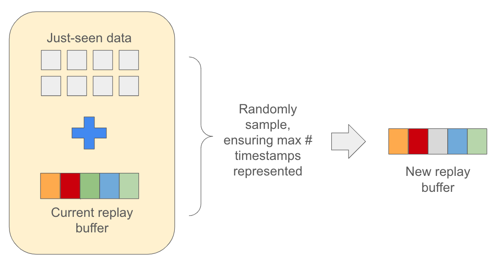
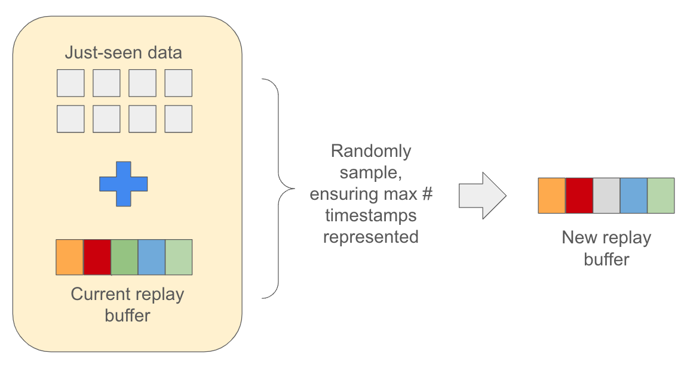
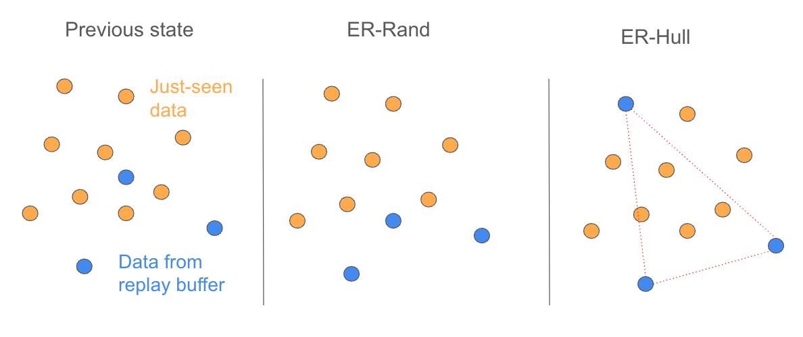
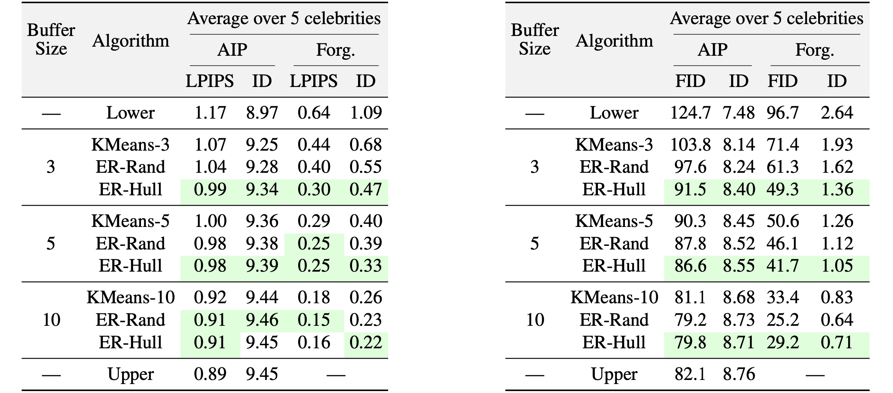
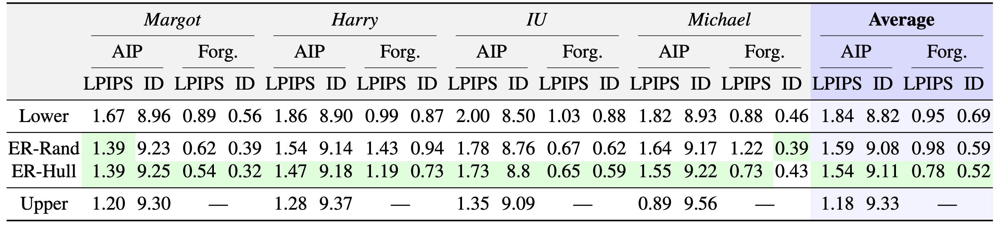
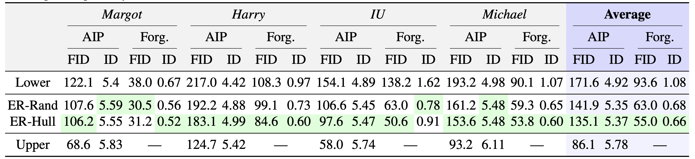

ER-Rand
We show that this simple experience replay method using random sampling, which we dub ER-Rand, works well with a large buffer size.
We introduce a novel continual learning problem: how to sequentially update the weights of a personalized 2D and 3D generative face model as new batches of photos in different appearances, styles, poses, and lighting are captured regularly.
We observe that naive sequential fine-tuning of the model leads to catastrophic forgetting of past representations of the individual's face. We then demonstrate that a simple random sampling-based experience replay method is effective at mitigating catastrophic forgetting when a relatively large number of images can be stored and replayed. However, for long-term deployment of these models with relatively smaller storage, this simple random sampling-based replay technique also forgets past representations.
Thus, we introduce a novel experience replay algorithm that combines random sampling with StyleGAN's latent space to represent the buffer as an optimal convex hull. We observe that our proposed convex hull-based experience replay is more effective in preventing forgetting than a random sampling baseline and the lower bound.
We show that this simple experience replay method using random sampling, which we dub ER-Rand, works well with a large buffer size.
We also introduce a new experience replay sampling algorithm, ER-Hull, that chooses how to populate the buffer based on the volume of the convex hull of the samples' corresponding vectors in the StyleGAN latent space.
We compare our methods to the upper bound of full finetuning across all timestamps, and the lower bound of naive sequential training on each timestamp without experience replay.
Continual Learning performance of personalized StyleGAN (MyStyle) in inverting an unseen test image (left) and synthesizing novel appearance (right), evaluated with Average Incremental Performance (AIP) measured with LPIPS (lower is better) and ID similarity (higher is better) as well as Forgetting of both metrics (lower is better), scaled by x10. ER-Rand and ER-Hull perform experience replay with simple random sampling and proposed convex hull optimization in StyleGAN latent space respectively.
Continual Learning performance of personalized EG3D (My3DGen) in reconstructing an unseen test image, evaluated with Average Incremental Performance (AIP) and Forgetting metrics measured with LPIPS (lower is better) and ID similarity (higher is better), scaled by ×10. ER-Rand and ER-Hull perform experience replay with simple random sampling and proposed convex hull optimization in StyleGAN latent space respectively. Buffer size is 3.
Continual Learning performance of personalized EG3D (My3DGen) in synthesizing novel appearance, evaluated with Average Incremental Performance (AIP) and Forgetting metrics measured with LPIPS (lower is better) and ID similarity (higher is better), scaled by ×10. ER-Rand and ER-Hull perform experience replay with simple random sampling and proposed convex hull optimization in StyleGAN latent space respectively. Buffer size is 3.
Example comparison of our methods with buffer size of 3 vs upper bound (full finetuning) and lower bound (naive sequential training). Celebrity shown: IU

Example comparison of our methods with buffer size of 3 vs upper bound (full finetuning) and lower bound (naive sequential training). Celebrity shown: Harry Styles

Example comparison of our methods with buffer size of 3 vs upper bound (full finetuning) and lower bound (naive sequential training). Celebrity shown: Margot Robbie

Example comparison of our methods with buffer size of 3 vs upper bound (full finetuning) and lower bound (naive sequential training). Celebrity shown: Michael B. Jordan

Our generative model personalization is based on the My3DGen Framework.